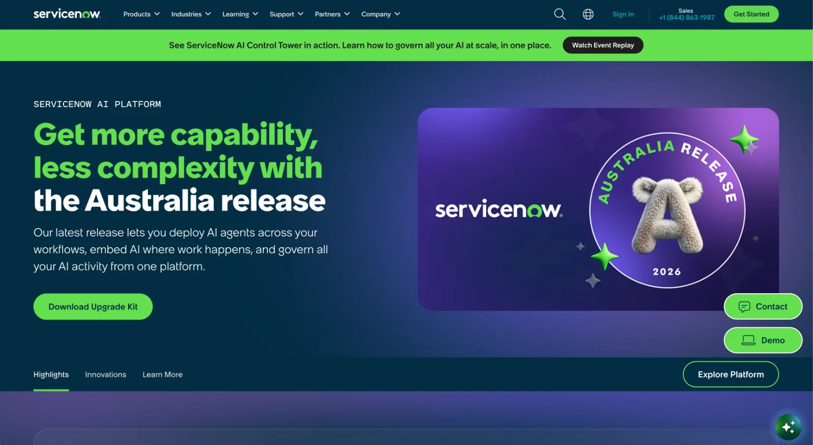

ServiceNow, 2023–26 · servicenow.com
Releases & Product Launches
Every release opened with a bill of materials of 25–40 pages, because we said yes to everything. Nothing in the GTM plan pointed at two-thirds of them.

Digital Product Manager, Digital Experience Platform. Contract, Nov 2023–Dec 2024
Digital Product Manager, Digital Experience Platform. Full-time, Apr 2025–Aug 2026
The situation
Quarterly product launches and semi-annual platform releases across servicenow.com. Every one of them began with a bill of materials of 25 to 40 webpages, assembled the way it had always been assembled: by accepting whatever stakeholders asked for.
My role
I spent my first stretch at ServiceNow getting very good at shipping that bill of materials. Then I started asking what it was for. Everyone had been arguing about which pages were important. It was a question without an answer, since everyone's page is highest-priority to them. The question nobody had asked was whether anything in the GTM strategy actually pointed to those surfaces. For roughly two-thirds of them, nothing did. What happened because I was there is that we stopped shipping a catalog and started shipping a launch.
What I did
Earned the standing first. Delivered 25+ multi-tab site pages per release across product and platform launches, driving 3% engagement and 3.2% form-conversion lifts (avg/YoY, 2024). You don't get to redesign the process until you've proven you can run it.
Changed the question from importance to connectedness. Tested every page on the BOM against one thing: is any other asset in the GTM plan driving to this surface? If nothing pointed at it, it wasn't a release pillar. It was a footnote to the release's scale. That test was checkable, which meant it ended arguments instead of extending them.
Made the cut a resequence, not a deletion. The pages that came off didn't die; they became run-the-business tasks after go-live. Nothing was lost. We stopped pretending everything was a launch.
Recruited an advocate rather than winning a fight. Aligned the primary stakeholder first, who then carried the new approach into the stakeholder team. An argument I make is a position. An argument my primary stakeholder makes is a direction.
Made yes cost something. Escalations still came, and a couple of extra pages still got in each cycle. Same as always. The difference: they now required real rationale and a reprioritization exercise. If your page comes in, something else comes out, and you decide which. The tradeoff went back to the team who wanted it, which is where it always belonged.
Protected the capacity I'd freed. The team had concurrent programs that couldn't pause, including the design system migrations I also ran. Scope discipline on releases was what made the other work possible.
Spent the capacity on the pages that survived. Cutting scope only matters if the team does something better with what's left. We watched how people actually moved through the latest release page (the key release surface), and enhanced UX by replacing static content with video where the data showed user engagement intention, and engagement with those content components nearly doubled.
What happened
67% scope reduction on the Australia release bill of materials, through structured prioritization rather than authority
Cross-functional teams focused on the actual release pillars instead of spreading their focus across footnote surfaces
Escalations became decisions: same rough exception rate, but now with stated rationale and an owned tradeoff behind each one
Increased experimentation velocity on the surfaces that mattered, including the release-page innovations components where swapping static content for video nearly doubled engagement, and taught us where to put it next time. That's what the cut bought.
Concurrent programs kept moving, because release scope stopped consuming the team by default
The mechanism was right. The framing cost me.
What I'd do differently
I sold it as a scope cut, which is a word that means loss to everyone who hears it. What it actually was, is a resequence: the same work, ordered by whether the GTM plan pointed at it. If I'd led with "your page still ships, it just ships after go-live" instead of "your page is out of scope," I think I'd have spent noticeably less political capital getting to the same place. The mechanism was right. The framing cost me.